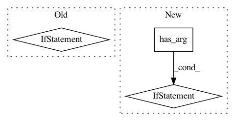

e10b29b425ec9f51ebe1dd30b01eaeea9d3a9c84,src/sagemaker/cli/compatibility/v2/modifiers/framework_version.py,FrameworkVersionEnforcer,modify_node,#FrameworkVersionEnforcer#Any#,81
Before Change
// if framework_version is not supplied, get default and append keyword
framework_version = _arg_value(node, FRAMEWORK_ARG)
if framework_version is None:
framework_version = FRAMEWORK_DEFAULTS[framework]
node.keywords.append(ast.keyword(arg=FRAMEWORK_ARG, value=ast.Str(s=framework_version)))
// if py_version is not supplied, get a conditional default, and if not None, append keyword
py_version = _arg_value(node, PY_ARG)
if py_version is None:
py_version = _py_version_defaults(framework, framework_version, is_model)
if py_version:
After Change
framework, is_model = _framework_from_node(node)
// if framework_version is not supplied, get default and append keyword
if matching.has_arg(node, FRAMEWORK_ARG):
framework_version = parsing.arg_value(node, FRAMEWORK_ARG)
else:
framework_version = FRAMEWORK_DEFAULTS[framework]
node.keywords.append(ast.keyword(arg=FRAMEWORK_ARG, value=ast.Str(s=framework_version)))
// if py_version is not supplied, get a conditional default, and if not None, append keyword
if not matching.has_arg(node, PY_ARG):
py_version = _py_version_defaults(framework, framework_version, is_model)
if py_version:
node.keywords.append(ast.keyword(arg=PY_ARG, value=ast.Str(s=py_version)))
In pattern: SUPERPATTERN
Frequency: 4
Non-data size: 3
Instances
Project Name: aws/sagemaker-python-sdk
Commit Name: e10b29b425ec9f51ebe1dd30b01eaeea9d3a9c84
Time: 2020-07-07
Author: 6631887+laurenyu@users.noreply.github.com
File Name: src/sagemaker/cli/compatibility/v2/modifiers/framework_version.py
Class Name: FrameworkVersionEnforcer
Method Name: modify_node
Project Name: aws/sagemaker-python-sdk
Commit Name: e10b29b425ec9f51ebe1dd30b01eaeea9d3a9c84
Time: 2020-07-07
Author: 6631887+laurenyu@users.noreply.github.com
File Name: src/sagemaker/cli/compatibility/v2/modifiers/framework_version.py
Class Name:
Method Name: _version_args_needed
Project Name: keras-team/keras
Commit Name: ced84c4b42d9186842e4cad6c11b0c8f2c18439b
Time: 2017-06-16
Author: chris.kerr@athion.de
File Name: keras/wrappers/scikit_learn.py
Class Name: BaseWrapper
Method Name: check_params
Project Name: keras-team/keras
Commit Name: 04a20177cf332004a291cee626c20a0262427796
Time: 2017-06-21
Author: chris.kerr@athion.de
File Name: keras/wrappers/scikit_learn.py
Class Name: BaseWrapper
Method Name: check_params